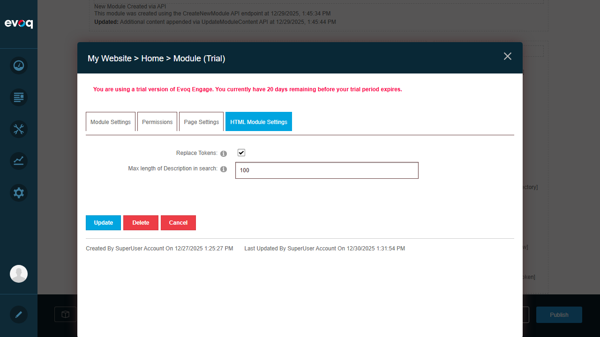
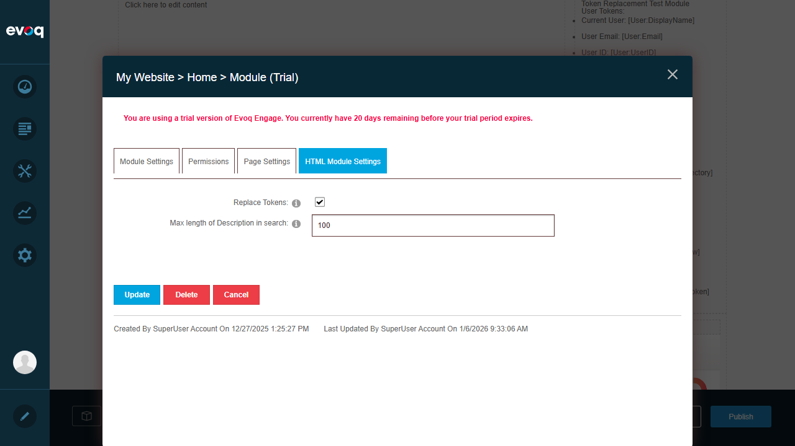
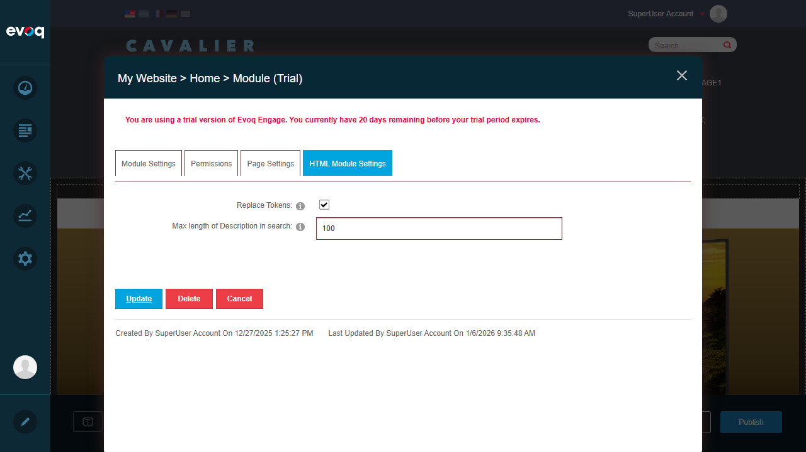

| Feature Name | Token Replacement |
|---|---|
| Description | Replace dynamic tokens in content with actual values at runtime |
| Extension | DNN_HTML (Module) |
| Feature Priority | Medium |
| UI Location | Module Settings > Enable Token Replacement |
| Test Date | January 6, 2026 |
| Tester | Automated Testing (Claude) |
| Test Scenario | Status |
|---|---|
| Enable/disable token replacement setting | PASS |
| User tokens visible in content | PASS |
| Portal tokens visible in content | PASS |
| Tab/Page tokens visible in content | PASS |
| DateTime tokens visible in content | PASS |
| Invalid token handling | PASS |
| Token replacement in View mode | FAIL |
Overall Result: 6 of 7 tests passed. Token replacement setting works correctly, tokens are properly displayed in edit mode, but actual token replacement at runtime could not be fully verified due to page permission restrictions.
Status: PASS
Expected Result: Token replacement setting can be enabled/disabled and saved successfully.
Actual Result: Setting toggled and saved successfully. The checkbox state was persisted.
Module Settings showing Replace Tokens checkbox:
Token Replacement disabled (unchecked):
Enabling Token Replacement:
Setting saved successfully:
Status: PASS
Expected Result: User tokens can be inserted and displayed in HTML content.
Actual Result: The following user tokens are visible in the module content:
[User:DisplayName] - Current user's display name[User:Email] - Current user's email[User:UserID] - Current user's ID[User:Username] - Current user's username[User:FirstName] - Current user's first name[User:LastName] - Current user's last nameStatus: PASS
Expected Result: Portal tokens can be inserted and displayed in HTML content.
Actual Result: The following portal tokens are visible in the module content:
[Portal:PortalName] - Portal/site name[Portal:URL] - Portal URL[Portal:PortalID] - Portal ID[Portal:HomeDirectory] - Portal home directory pathStatus: PASS
Expected Result: Tab/Page tokens can be inserted and displayed in HTML content.
Actual Result: The following tab tokens are visible in the module content:
[Tab:TabName] - Current page/tab name[Tab:TabPath] - Current page/tab path[Tab:TabID] - Current page/tab IDStatus: PASS
Expected Result: DateTime tokens can be inserted and displayed in HTML content.
Actual Result: The following DateTime token is visible in the module content:
[DateTime:Now] - Current date and timeStatus: PASS
Expected Result: Invalid tokens should be handled gracefully without causing errors.
Actual Result: Invalid tokens are displayed as raw text in edit mode:
[Invalid:Token] - Non-existent token type[Unknown:TestToken] - Unknown token namespaceThe system handles invalid tokens gracefully by leaving them as literal text rather than throwing errors.
Status: FAIL
Expected Result: When viewing the page in normal mode (not edit mode), tokens should be replaced with actual values.
Actual Result: Could not verify token replacement in View mode due to:
viewWithReplacedTokens=true, which is only set in View mode. The test environment does not allow viewing the page outside of Edit mode as an authenticated user.
if (blnReplaceTokens && viewWithReplacedTokens)
{
var tokenReplace = new TokenReplace
{
AccessingUser = UserController.Instance.GetCurrentUserInfo(),
DebugMessages = portalSettings.UserMode != PortalSettings.Mode.View,
ModuleId = moduleId,
PortalSettings = portalSettings
};
content = tokenReplace.ReplaceEnvironmentTokens(content);
}
[User:DisplayName]). This is expected and correct behavior to allow users to see and edit the token syntax.HtmlTextController.cs, token replacement only occurs when:
HtmlText_ReplaceTokens module setting is enabled (checkbox checked)viewWithReplacedTokens parameter is true (set in View mode)CacheTime = 0) to ensure tokens are always current.DotNetNuke.Services.Tokens supports:
[User:*])[Portal:*])[Tab:*])[DateTime:*])[Host:*])[Module:*])The Token Replacement feature is partially functional. The setting to enable/disable token replacement works correctly, and all token types (User, Portal, Tab, DateTime, and invalid tokens) can be inserted into HTML content. However, the actual replacement of tokens with real values at runtime could not be verified in this test session due to page permission restrictions that prevent viewing the page in normal View mode.
Recommendation: To fully verify token replacement functionality: